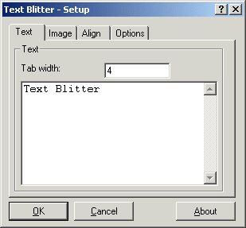
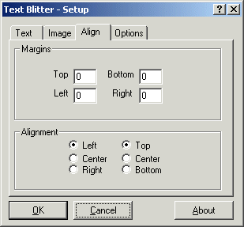
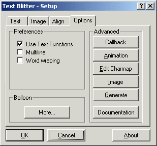
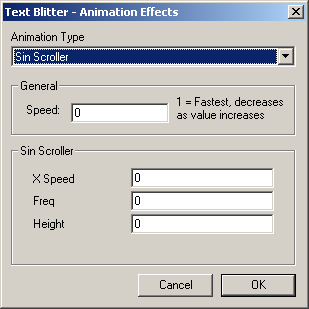
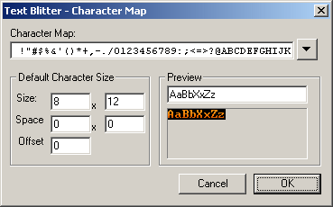
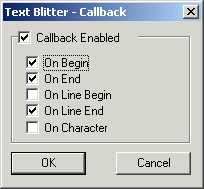

Dialog Reference
Here you can find detailed information on each of the dialogs within the text blitter
The Setup Dialog
Animation
Chracter Map
Callback
The Setup Dialog




|
The setup dialog gives you a broad range of options that allow you to alter the majority of the Text Blitter options. The dialog has been separated into four different areas: Text, Image, Align, and Options...
Text
- Tab Width - Not everyone likes the standard 4 or 8 character tab size, this option gives you total control on the number of characters the extension uses when aligning text on tab characters.
- Buffer - The edit time buffer is limited to 1024 characters, to you use more than this at runtime, you must load the text in through an external file or construct it manually from other resources.
Image
The image options give you general control over properties of the internal image
- Size - The size of the image not only affects how the extension crops the original size, but how the characters are wrapped around to the next line.
- Offset - The image offset lets you reposition the origin of the image allowing you achieve special effects of which are covered in the examples section
- Use Transparency - When the transparency option is enabled any transparent (MMF's transparent colour) areas will appear invisible, these areas will otherwise appear black
- Colour - Upon startup of the extension, the colour selected here will be replaced with transparent (MMF's transparent colour) which, when the transparency option is enabled, will appear transparent.
Align - Margins
The margin's primary use is to change the position of where the text is drawn. This option does not affect the collision options when used in the form of an active object.
The second use of the margins is for the Marquee animation which uses the gap between the edge of the margin and the edge of the object to fade the text in or out depending on the direction of the marquee animation. Check out the animation section for more info.
Align - Alignment
These options allow you to change the alignment of the text within the extension. The horizontal central option centralises each line of text according to its length. Alignment is applied after word wrapping so all text will remain visible within the extension
Options - Preferences
- Use Text Functions - Text functions allow you to use the C-like escape character '\n' that is replaced by the new line character when the text is drawn to the screen. This allows you to store your text on a single line - especially useful for RPGs and other games that store their text outside of the game.
- Multiline - When this option is turned on all newline characters will be interpreted to move the text to the another line. This option, when turned off, also prevents word wrapping.
- Word wrapping - A big feature of the extension is the ability to control word wrapping at the click of a button. The word wrapping feature will make sure that the text is kept within the horizontal boundaries of the extension.
Options - Advanced
- Callback - Opens up the callback options dialog box
- Animation - Opens the animation dialog box to alter the animation settings within the extension
- Edit Charmap - Go to the Character map settings
- Image - Edit the internal image map
- Generate - Runs the bitmap generation utility for converting fonts to bitmaps files.
- Documentation - Assuming the documentation is located in the correct place (somewhere around MMFusion\Programs\Docs\Text Blitter), this button will open the documentation in the default web browser
Options - Balloon
- More... - Opens up the Balloon options dialog box
All of the options from within the setup dialog are available at runtime through the extension's actions.
The Animation Effects Dialog
|
The Text Blitter includes 2 basic animations, the major one is a fully functional marquee effect which now supports multiple lines
General
- Speed - Controls the speed of the animation. The value specifies how many cycles of the MMF engine are to occur before an update to the animation is processed, therefore '1' is the fastest speed, and the speed will decrease as you increase this value
Properties
The properties of the animations change for different modes, check out the animations section for more information on what each property does and how it affects the animation.
|

|
The Character Map Dialog
The Text Blitter uses what is known as a 'character map' to define the order of the characters on the image. This dialog gives you the ability to alter the order of the characters
The dialog also includes character sizing options and offset value. All of these options are available through the actions of the extension

The Callback Dialog
The callback dialog to the right allows to you select which callbacks are used within the extension. You must note that the use of a callback slows down the extension, only select the ones you will be using.
If you switch off the callback feature, none of the callbacks will be called

Content and Design are Copyright (c) 2001-2002 Christopher Lightfoot. All rights reserved.